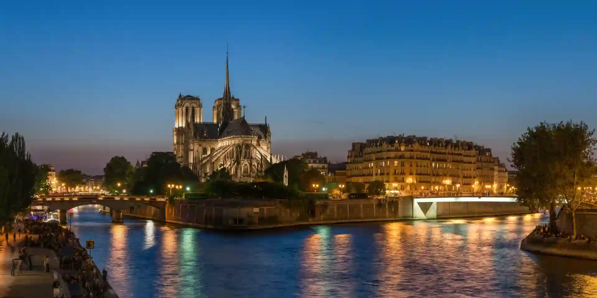
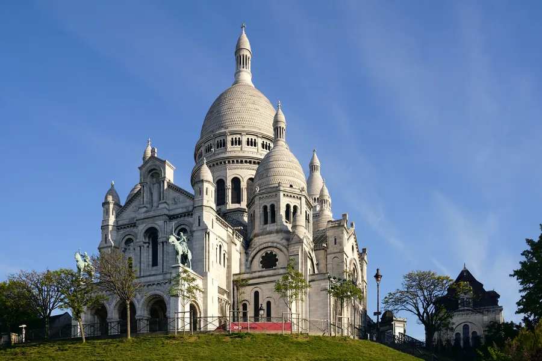

Escape rooms urbanos al aire libre
Francia
París
Le Marais sobrevivió a Haussmann casi intacto: mansiones aristocráticas, plazas reales y un barrio judío con memoria propia.
Rutas en París

Los códigos de Le Marais
De la Île de la Cité a la Place des Vosges por las callejuelas que Haussmann nunca llegó a ensanchar, entre mansiones aristocráticas, el antiguo barrio judío y las placas que recuerdan a quienes vivieron aquí.

La colina blanca de Montmartre
Montmartre fue un pueblo independiente, con ayuntamiento y viñedos propios, hasta que París se lo anexionó en 1860 para convertirlo en su distrito 18. Sobre esta colina, la más alta de la ciudad, se instalaron después pintores sin apenas dinero, un cabaret con un conejo por emblema y el único viñedo que todavía se cultiva dentro de París, mientras una basílica blanca crecía despacio en la cima. Son cerca de 2,5 km, con cuestas y tramos de escalera: Montmartre es, literalmente, una colina.